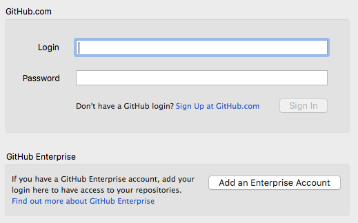

Basic Github GUI Exercise
Let’s try it ourselves now. Let’s get you set up.
Getting Access to GitHub
So you’ve decided you want to begin using GitHub. Good idea. Here’s how you can get started.
- Install a modern browser, such as Google Chrome; GitHub won’t work with Internet Explorer 8.
- Create an account on https://github.com/.
Github GUI Quick Overview
Please go to https://desktop.github.com and download the appropriate file depending on your operating system.
Install and follow the instructions to the following screen.

Enter your Github account credentials and click “Sign in”
Hit next until you reach a screen that tells you to add repositories. You can hit “Skip this step” on the bottom.
Now you’re all set up! Go to the next page to get your hands dirty.
 Git Foundations
1.0
Git Foundations
1.0